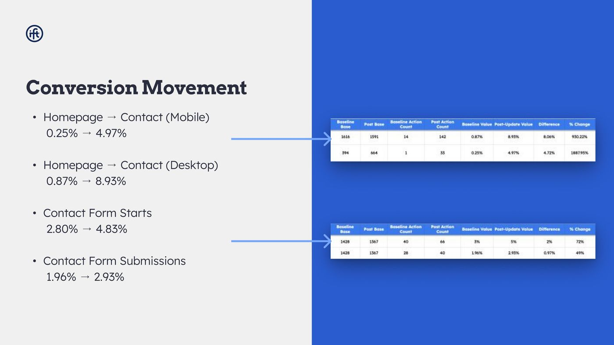
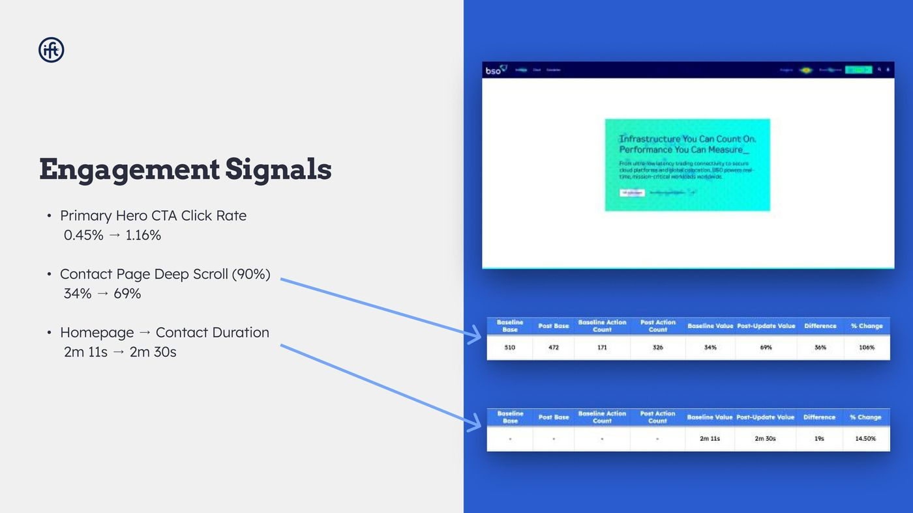
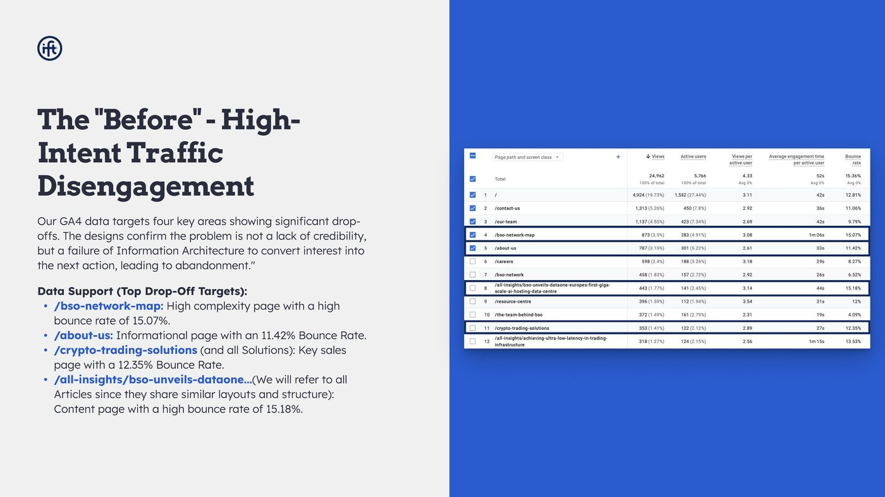
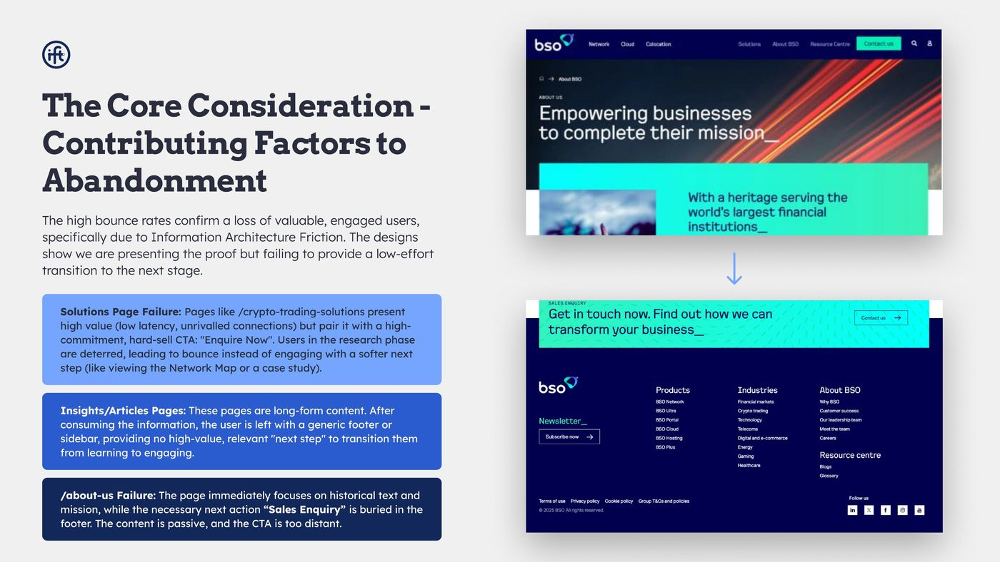
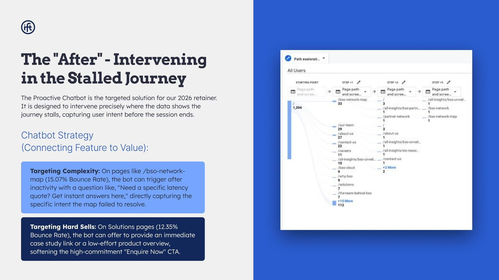

Homepage to enquiry, measured before and reported honestly
BSO provides ultra low latency network infrastructure to financial markets. The brief was the homepage, contact page and thank you page. The work was a funnel diagnosis first and a redesign second, and the reason this page exists is the validation review at the end of it.

What moved
- 0.87 to 8.93%desktop homepage to contact, 14 enquiries to 142
- 2.80 to 4.83%contact form starts, 40 to 66
- 1.96 to 2.93%contact form submissions, 28 to 40
- 34 to 69%contact page deep scroll to 90 percent
The number I am not going to headline, and why
Mobile homepage to contact reads 0.25 percent to 4.97 percent, which is an 1,888 percent improvement and the most impressive figure in the deck. The baseline behind it is one single action across 394 sessions. The post period is 33 actions across 664 sessions.
The direction is real. The percentage is close to meaningless, because a rate calculated from a denominator of one is not a rate, it is an anecdote with a decimal point. The desktop figure, 14 actions to 142 on roughly 1,600 sessions either side, is the one I would defend in an interview.
I include the weak number rather than quietly dropping it, because a portfolio that only shows the flattering cut of the data is not evidence of measurement discipline. It is evidence of editing.
The signal that surprised me
Time from homepage to contact went up, from 2 minutes 11 seconds to 2 minutes 30 seconds. If you assume a good funnel is a fast funnel, that reads as a failure.
Read alongside contact page deep scroll doubling from 34 to 69 percent, it reads as the opposite: people were reading more of the page before enquiring, not being hurried through it. The enquiry rate went up at the same time. Faster is not the goal, qualified is the goal, and this is the pair of numbers I use when someone tells me to reduce time on page.

How the diagnosis was structured
I write these reports in three acts, because a client audience follows a narrative and does not follow a list of findings. Act one is where the journey breaks. Act two is what the behaviour tells you about intent. Act three is where friction still exists, which is also the scope of the next phase.



The experiment work
On the BSO homepage I designed and ran A/B tests in VWO and Convert on dual call to action placement, positioned at the hesitation and scroll depth points the recordings and scroll data had identified, testing variations in weight, emphasis and copy. Measured on bounce rate, page engagement and average engagement time.
What these numbers do not prove
Three honest limits. First, the homepage, contact page and thank you page changed in the same release, so I cannot attribute the movement to any single change. Second, part of the improvement is measurement correction: the instrumentation was rebuilt at the same time, and a baseline captured through broken tracking understates itself. Third, none of this is a controlled experiment, it is a before and after comparison over matched periods, which is a weaker instrument and I would rather say so than imply significance I did not calculate.
What I would do differently
I would have staged the release. Shipping three pages together made the aggregate result look better and made the attribution impossible, which is a bad trade if what you want is to learn rather than to report. I would also have set a minimum baseline count before agreeing to report a rate at all, so the mobile figure never reached a client slide in that form.